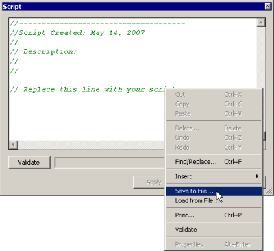
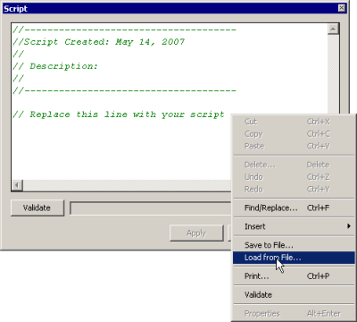

|
|
|
|
|
|
|
|
Vijeo-Designer offers some useful ways of working with scripts.
The following steps describe how to change the font used in the script editor.
From the Tools menu, select Script Font Settings.
In the Script Font Settings dialog box, define the font and font size for the script, then click OK.
Other time-saving operations include saving scripts to and loading scripts from a text file format. You can run the save/load operations from either the Navigator or script editor.
Saving to a Text File
Right-click a script you want to save and select Save to File, then name the file and click OK.

Loading a Text File
Right-click a script you want to load with a text file and select Load from File.

When a confirmation message appears, you can click OK to overwrite the existing script with the selected text file.
If you want to insert a script instead of overwriting the entire script, open and copy the script in a text editor, then paste it into the script.